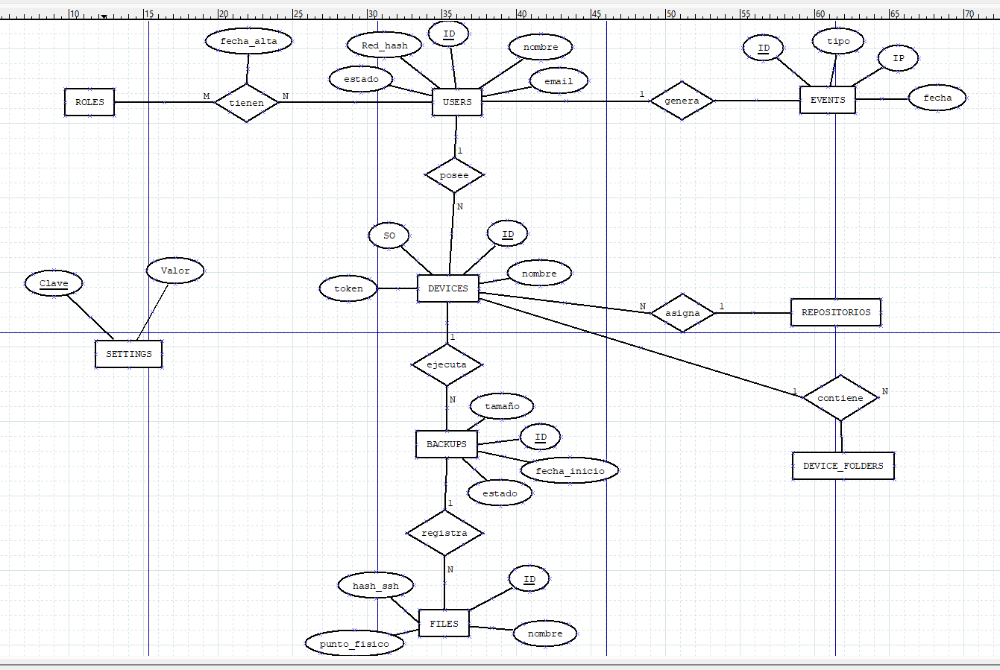

Servidor de copias de seguridad autoalojado para usuarios domésticos y pequeñas empresas.
Sin nube, sin cuotas, sin dependencias.
Equipo
Jesús Pérez Marinetto · Nicolás Baya-Casal Sansolini · Ismael Martín Ruiz · Iván López García
Servidor de copias de seguridad autoalojado para usuarios domésticos y pequeñas empresas.
Sin nube, sin cuotas, sin dependencias.
Equipo
Jesús Pérez Marinetto · Nicolás Baya-Casal Sansolini · Ismael Martín Ruiz · Iván López García
Google Drive, Dropbox y OneDrive cobran cuotas que se acumulan indefinidamente.
Los archivos residen en servidores de terceros. Imposible controlar quién accede.
Si el servicio cierra o cambia condiciones, los datos quedan en riesgo.
Niddo se instala en tu red. Tus archivos nunca salen de casa. Gratis.
Estadísticas en tiempo real: dispositivos, backups, espacio usado y últimos eventos. Vista diferente según el rol.
Registro de equipos Windows con token único. Descarga del agente Python preconfigurado desde el propio panel.
Descarga de archivos individuales o carpetas enteras como ZIP. Cada usuario solo ve sus propios backups.
Registro de seguridad con filtros por tipo. Logins, errores, IPs bloqueadas y copias completadas — solo Admin.
Gestión de cuentas con roles Admin / Usuario. Cambio de contraseña propio. Solo el admin primario puede degradar admins.
Montaje y desmontaje de discos externos desde el panel. Asignación de cuotas por partición — solo Admin.
Contraseñas nunca en texto plano. Estándar de la industria.
64 caracteres hex por dispositivo, revocables individualmente.
Tras 5 intentos fallidos la IP queda bloqueada y registrada.
5 minutos de inactividad cierran la sesión del panel.
Huella de cada archivo. Integridad garantizada al restaurar.
Registro completo de eventos consultable desde el panel.
Servidor web · Debian/Ubuntu
API REST · Panel web · Lógica del servidor
Base de datos relacional
Interfaz del panel · sin frameworks
Agente Windows · solo librería estándar
Instalador automático · apt-get
Control de versiones · GitHub Pages
Sistema operativo del servidor

Inversión inicial baja. Crecemos con ingresos de suscriptores y clientes de empresas. Reinversión en infraestructura según demanda.
Kit Digital para digitalización de pymes. Ayudas a startups tecnológicas. Fondos europeos para software open source.
Constitución como SL o autónomo. Registro de marca. Gestión fiscal y laboral desde el primer cliente de pago.
Metodología Kanban en GitHub Projects. Commits descriptivos, issues y revisiones de código como flujo de trabajo.
0 € · para siempre
8 €/mes · por servidor
25 €/mes + cuota negociable
Backend · Frontend · Base de datos · Web pública · Repositorio · Documentación · Presentación
Documentación del proyecto
Modelo Entidad-Relación de la base de datos
Participación en el proyecto
CFGS ASIR · IES Zaidín-Vergeles, Granada · 2025–2026